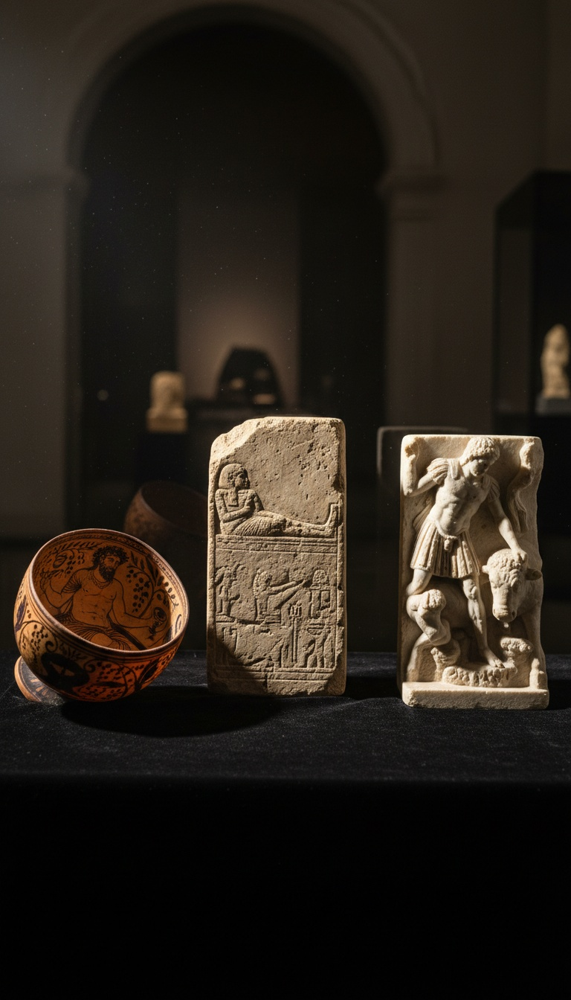

Jesus of Nazareth was not the first god born of a virgin, betrayed, entombed, and raised on the third day. He was at least the fourth to carry that resume, and the paperwork is older than the New Testament by a margin measured in millennia.
The story you were handed in Sunday school was assembled from a template already carved into temple walls across three empires. Then in 325 AD, a room full of bishops raised their hands and made it official.

Osiris Was Sealed in a Coffin Two Thousand Years Before Bethlehem
The Egyptian god Osiris was betrayed by his brother Set, tricked into lying inside a custom coffin, sealed with molten lead, and thrown into the Nile. He returned from death to rule the underworld as judge of souls. The Pyramid Texts inscribed at Saqqara around 2400 BC already describe his death and resurrection in detail, and you can read the hieroglyphs yourself inside the pyramid of Unas today.
The Osiris myth in its fullest surviving narrative form comes from Plutarch's essay De Iside et Osiride, written around 100 AD, but the ritual mourning of Osiris and the celebration of his return was staged annually at Abydos from at least the Middle Kingdom onward. The Ikhernofret Stela, now in the Neues Museum in Berlin, records a courtier producing the passion play of Osiris around 1850 BC. Death, entombment, resurrection, judgment of the dead. Eighteen centuries before the manger.
Mithras Was Born from Rock on December 25
The Persian god Mithras was born fully formed from solid stone, an event called the petra genetrix, and his birthday was celebrated on the twenty-fifth of December as Dies Natalis Solis Invicti. He shared a final sacred meal with twelve companions before ascending. The imagery is not speculative. It is carved into stone reliefs across the Roman Empire.
The Mithraeum beneath the Basilica of San Clemente in Rome, discovered in 1867 and still accessible under the church, contains a tauroctony altar dated to the late second century AD. The London Mithraeum, unearthed on Walbrook Street in 1954 and reconstructed at the Bloomberg building, produced a marble relief of Mithras slaying the bull now held in the Museum of London. Franz Cumont's excavations at Dura-Europos in Syria in the 1930s pushed the cult's territorial reach from Britain to the Euphrates, and the frescoes are held today at Yale University Art Gallery.
Dionysus Turned Water Into Wine on Andros
The Greek god Dionysus was the son of Zeus and a mortal woman, Semele, who died before giving birth. He performed the water-into-wine miracle at his temple on the island of Andros, where Pausanias in his Description of Greece Book 6 records that a spring flowed with wine for seven days every January during the festival of the Theodosia. He was torn apart by the Titans, entombed, and returned to life. His worshippers ate bread and drank wine as his flesh and blood in the rite called omophagia.
The Derveni Krater, a bronze vessel from around 330 BC now in the Archaeological Museum of Thessaloniki, depicts the Dionysian mysteries in staggering detail. The Villa of the Mysteries at Pompeii, buried in 79 AD and excavated in 1909, contains a fresco cycle showing initiates going through a symbolic death and rebirth in Dionysus's rites. Euripides wrote The Bacchae around 405 BC. The template was already four hundred years old when Paul wrote his first letter.
Three hundred bishops did not discover that Jesus was divine. They voted on it, and the gospels that lost were left on the floor.
Nicaea Was a Show of Hands, Not a Revelation
In May 325 AD, the Roman emperor Constantine summoned roughly three hundred bishops to his summer palace at Nicaea, modern Iznik in Turkey, to settle a theological argument. Arius of Alexandria taught that Jesus was created by the Father and therefore lesser. Athanasius argued Jesus was co-eternal and of one substance. The bishops voted. Two refused to sign and were exiled to Illyricum with Arius.
The Nicene Creed that emerged is not a discovery. It is a committee resolution. Eusebius of Caesarea, who was present, describes the proceedings in his Vita Constantini, and the acts of the council survive in the collections of Mansi and the Patrologia Graeca. The emperor sat on a golden throne at the head of the assembly. The man who called the vote had been baptized a sun worshipper and would not receive Christian baptism until he was on his deathbed twelve years later.
The Gospels That Lost Were Left on the Floor
The New Testament you own contains four gospels. At least thirty others were in circulation by the fourth century and did not make the cut. The Gospel of Thomas, the Gospel of Philip, the Gospel of Mary, the Gospel of Judas, the Gospel of Peter, the Infancy Gospel of Thomas, the Apocryphon of John. Some were declared heretical. Some were quietly buried.
The Nag Hammadi library, discovered in a sealed jar in Upper Egypt in December 1945 by a farmer named Muhammad Ali al-Samman, contained fifty-two texts including thirteen leather-bound codices dated to around 350 AD. They are now housed at the Coptic Museum in Cairo. The Gospel of Judas resurfaced in the 1970s in a Middle Egypt cave, was authenticated by radiocarbon dating to 280 AD plus or minus sixty years, and was published by National Geographic in 2006. These were not fringe documents at the time they were written. They were competing scripture that lost a political fight.
The Canon Was Locked in 367 AD by a Single Letter
The twenty-seven-book New Testament canon you have today was fixed by Athanasius of Alexandria in his 39th Festal Letter, written in 367 AD, forty-two years after Nicaea. He listed the books to be read and instructed monasteries to purge everything else. The Synod of Hippo in 393 AD and the Council of Carthage in 397 AD ratified his list. That is the paper trail.
The Codex Sinaiticus, produced around 350 AD and rediscovered by Constantin von Tischendorf at Saint Catherine's Monastery on Mount Sinai in 1844, is the oldest complete Bible in existence. It contains the Epistle of Barnabas and the Shepherd of Hermas as scripture. Those two books were later removed. The British Library holds the largest surviving portion, and you can view every page online. The Bible was still being edited three centuries after the crucifixion.
The question is not whether a Galilean preacher named Yeshua bar Yosef walked the roads of first century Palestine. He probably did. The question is how much of the story wrapped around him was already carved into Egyptian limestone, Persian marble, and Greek bronze centuries before he drew breath.
Osiris rose. Mithras was born of a rock on December 25. Dionysus turned water into wine. Then three hundred men in a Turkish lakeside town raised their hands and decided which version you would inherit. If the vote had gone the other way in 325, the god you pray to would have a different name and the same story. So which piece of the template convinces you the resurrection was original, and which piece are you still trying not to see?
Before you go
7 books the Vatican doesn't want you reading. Free PDF — the texts they cut, with sources. Joined by 140+ Inner Circle members.
No spam. Unsubscribe anytime.
Go deeper
The Hidden Canon, Vol. I — Enoch. Jubilees. Thomas. Mary. Judas. 90 pages, 14 chapters, every receipt cited. The books your Bible quietly removed.
Read the Canon →Books that informed this investigation
As an Amazon Associate, Hidden Epoch earns from qualifying purchases. Cost to you: nothing.
Research safely
The VPN we use to research without being tracked. First 3 months free.
Get NordVPN →